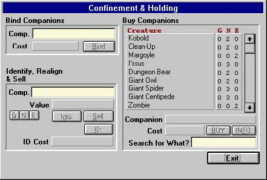

The City: Holding & Confinement

On the right is the list of creatures that are currently available. Like the store, the GNE represent the number of the specified creature that are available for the given alignment. To select a future companion, simply click on it (and select the alignment if prompted). For Information on a creature, click INFO. To buy them, click BUY. To search for a creature, simply type in part of or the whole name of the item you are looking for and hit return.
To Sell or Identify a companion, Drag and Drop the selected companion picture from your Companions tab (Objects & Spells Window) into the Comp. Text Box in the Sell, Identify & Realign Companions area.
Tan-Yellow shaded areas in the window represent fields where you can either type in data or Drag and Drop a companion. Dark-Gray shaded areas in the window represent fields that just display information.
Holding Inventory
Selling a companion to the store is the only way to get rid of hostile (or bound) companions without taking the chance of them turning on you and attacking.
When you sell a companion to the store, it will be added to the inventory list and available for purchase by others. However, just as the Items store, other adventurers and explorers sometimes seek companions from holding as well. This can be a disadvantage if the creature they purchase is the last of its type in stock - especially if it's a very useful companion! The advantage to this is that these individuals also sell the creatures they either bind or befriend on their explorations to the holding center as well. Because of this, it's recommended that one check Holding & Confinement for any new inventory every once and awhile - you never know what you'll find!
Available options within Holding & Confinement are as follows:
Buying Companions
You can make a purchase by clicking on the desired creature in the list of available companions (and selecting the alignment if prompted) then pressing the BUY button.
When a companion is Bought, it will be bound to a certain level, but depending on the power (guild levels) of the character, further binding may be required.
Buying companions can be very advantageous for starting characters, because it quite often gives the nasty monsters in the dungeon another target to hit.
Selling Companions
You can Sell companions you have in your possession by either typing the number of the companion into the Sell Comp. field and pressing Return, or Dragging & Dropping the desired companion picture in the Sell Comp. Field, then clicking the SELL button. This 'section' also allows you to identify and realign companions (described below).
Any companion you sell to the holding center will be available for purchase, but usually at a much higher price than you sold it for.
Learning about a Companion
To learn about a companion and their abilities, select/drag it in the 'Sell & Identify Companion' area and click the ID button. This gives you different information depending upon your current knowledge of the creature, which is based on your character's Intelligence, Wisdom and Guild Level. How much you know about a creature initially is determined by your intelligence and wisdom. You will be able to identify some creatures when you encounter them, but most others will usually require the use of the Holding & Confinement Centers identification services to obtain all information.
When you bring up the Information on a companion in the Stats Window Misc Tab, the information displayed will be dependent on your current knowledge of the creature. For more information on companions, please see the Companions Section in this Helplesson
Realign a Companion
This allows you to change the alignment of a companion. This is a very tedious process that is both very expensive and risky - especially for companions who are realigned opposite to their original alignment, which can result in the death of the companion. To realign a companion, simply select/drag it in the 'Sell & Identify Item' area and click one of the three 'GNE' buttons.
Bind a Companion
Once a character has purchased a companion or charmed/bound them in the dungeon, it becomes necessary either sooner or later to reinforce the bind level of a companion. A Mage has access to specific spells that are built for this, but other characters are not so fortunate (unless they find items capable of this). For this reason, the Holding and Confinement center offers the services of their bindsmen, who have the ability to re-bind a companion so that they do not break away from their masters (or at least make it harder).
Though very useful, re-binding a companion can quite often be very costly, but can be worth it if the companion is helpful enough to the character.
Companions that joined a character free of will cannot be re-bound.
With all options in the city, gold will be removed from your bank account if you do not have enough on your character, but do in your account.
Move to the next section to read about Items.
Move to the previous section to read about the City Store.
M1: "The Depths of Dejenol" is a Trademark of Decklin's Domain Ltd and is © Copyright 1994-2026 All Rights Reserved